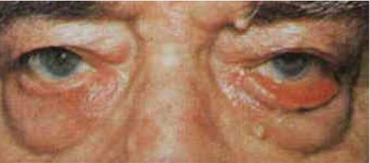

Part I · Ectropion
Clinical picture of ectropion
It depends on the severity and duration of the ectropion.
- Epiphora: due to eversion of the lacrimal punctum; this leads to an eczematous reaction of the skin of the lower lid, followed by scarring with more ectropion, then more epiphora — initiating a vicious circle.
- Chronic conjunctival hyperemia, dryness and hypertrophy.
- Lagophthalmos with exposure keratopathy in severe paralytic cases.
Vicious circle ectropion → punctal eversion → epiphora → eczema → scarring → worse ectropion.
